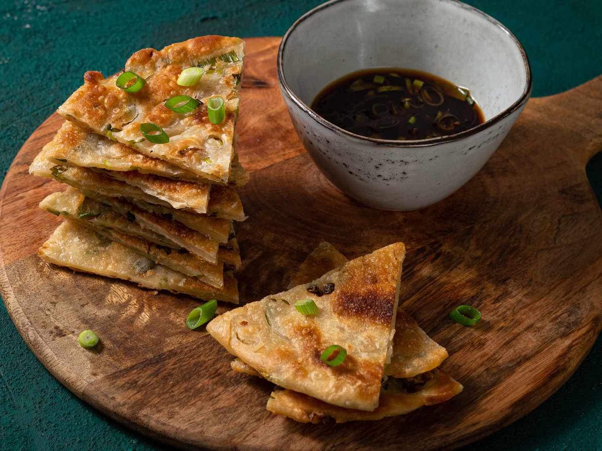

Scallion Pancakes

Scallion pancake or green onion pancake", is a Chinese savory, unleavened flatbread folded with oil and minced scallions (green onions). Unlike Western pancakes, it is made from dough instead of batter. It is pan-fried, which gives it crisp edges and a chewy texture. Many layers make up the interior, contributing to its chewy texture
Ingredients
- 3 cups bread flour
- 1 ¼ cups boiling water
- 2 tablespoons vegetable oil
- salt and pepper to taste
- 1 bunch green onions, finely chopped
- 2 teaspoons vegetable oil, or as needed
Instructions
- Use a fork to mix flour and boiling water in a large bowl. Knead dough into a ball. Cover bowl with plastic wrap; let dough rest for 30 to 60 minutes.
- Evenly divide dough into 16 pieces. Roll each piece into a 1/4 inch thick circle. Brush each circle with oil, season with salt and pepper, and sprinkle with about 1 teaspoon of green onions. Roll up, cigar style; coil each pancake and pinch open ends together to form a disc. Roll each circle flat to about 1/4 inch thickness.
- Heat 2 teaspoons oil in a large skillet. Fry cakes until golden brown, about 2 minutes on each side. Add more oil between batches, if necessary.